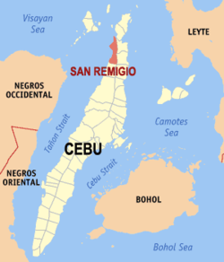

<html lang="en"></html> 
<head>
    <meta charset="UTF-8">
    <meta name="viewport" content="width=device-width, initial-scale=1.0">
    <title>My home Town</title>
    <link rel="stylesheet" href="style.css">
</head>


<body>
    

    <h1 style="color: antiquewhite;">Municipality Of San Remigio</h1>
    <h2 style="color: antiquewhite;">What Is San Remigio</h2>

    <br><hr>
    
    <p id="p1">San Remigio was formerly known as "Kanghagas", a kind of tree that grew in abundance in the area.
        When the Spanish conquistadores arrived, they identified a town site by clearing the kanghagas trees.
         At the time, Kanghagas was part of barangay Punta.</p>
    
         

         <br> <hr>
      

         <p id="p2"> The unique place in "San Remigio" is the "Lapyahan beach" and the lapyahan is known as the best sunset view of the north. 

            

        </p>
      

        <br><hr>
    
        <p id="p3">The Lapyahan Festival is an annual celebration held in the municipality of San Remigio in Cebu, Philippines.
        The festival is held every May and is a time for the locals to come together to 
        celebrate their heritage, culture, and the bounty of the sea.</p>

        

        <br><hr>
        <header>

        <h1 id="lap" style="color:antiquewhite;">The Relevant resources about my town "San  Remigio"</h1>
            <nav id="topnav">

        <a href="https://youtu.be/3OZ15dolJ4U?si=fFJAj9pHyhKMJlYg" class="nav-link">The history of San Remigio</a>
        <a href="https://youtu.be/RRR4bDP9V94?si=otSWKges52K_d2LU"class="nav-link">Lapyahan festival</a>
            </nav>
        </header>    
    

</body>

</html>